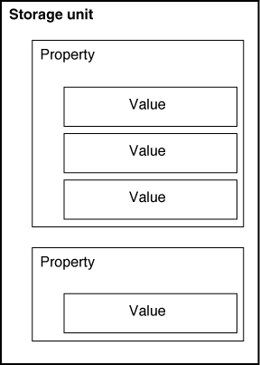
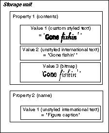
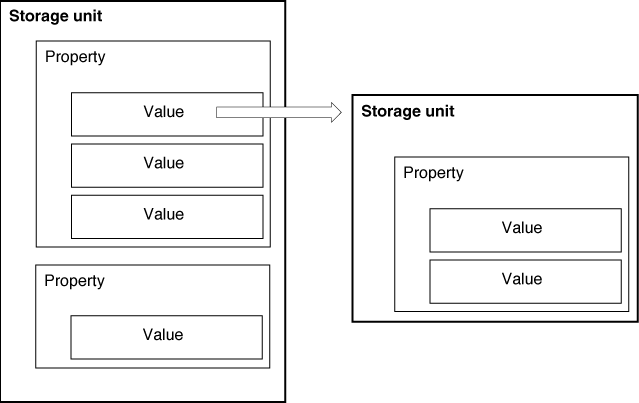
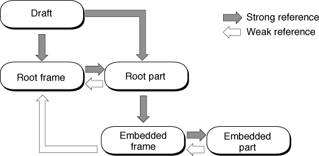
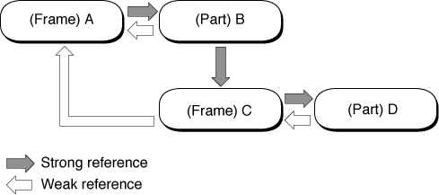

The OpenDoc Storage System
The OpenDoc storage system is a high-level mechanism for persistent or ephemeral storage that allows multiple part editors to share a single document effectively. The storage system is implemented on top of the native storage facilities of each platform that supports OpenDoc.The OpenDoc storage system effectively gives each part its own data stream for storage and supports reliable references from one stream to another. The system includes a robust annotation mechanism that allows many pieces of code to access information about a given part without disturbing its format.
The identity of a part is consistent within a session; it is unique within its draft and testable for equality with other part identities. Parts can persistently reference other objects in the same draft, including other parts, thus allowing runtime object structures to be saved and reconstructed in a future session.
Parts have more than just their content to store persistently. Properties are used to store both the content of the part and supplemental information. OpenDoc defines a standard set of properties for all parts, and you can assign additional properties to a given part. The name of the preferred part editor is one example of a standard property that can be stored with a part.
The storage system allows OpenDoc to swap parts out to external storage if memory is required for other parts. When a part is first needed, its part editor reads it from external storage into memory. When it is no longer needed, the draft can delete it. If the part is needed again at a later time, the storage system can either return the in-memory part to the part editor or--if the part has been deleted because of low memory--bring the part once again into memory from storage. When it reads or writes its parts, your part editor may not know whether the data is currently being transferred to or from memory, or to or from external physical storage.
Storage Units, Properties, and Values
The OpenDoc storage system is not an object-oriented database. It is a system of structured storage, in which each unit of storage can contain many streams. This design eases the transition for developers working with existing code bases, which generally assume stream-based I/O.The controlling storage object is the storage system object, which instantiates and maintains a list of containers. The containers are objects in the container suite, a platform-specific storage implementation. (On the Mac OS platform, version 1.0 of OpenDoc is released with the Bento container suite, a container suite that is based on Bento, a storage technology that can be used with or independently of OpenDoc.)
Each container object in a container suite can hold one or more document objects, each of which in turn contains one or more draft objects. Each draft contains a number of storage unit objects, each of which is much like a directory structure in a typical file system (although multiple storage units might be physically stored in a single file, or perhaps not stored in files at all). Storage units hold the streams of stored data.
The runtime relationships among these storage objects are diagramed in Figure 11-9
Storage-Unit Organization
You can visualize a storage unit as a set of properties, or categorized groups of data streams. A property is identified by its property name, an ISO string. Each property consists of a number of streams called values, each of which stores a different representation of the same data, in a format identified by a named type (a value type, also an ISO string). Thus, there can be several properties (named categories) in a single storage unit, and several values (typed streams) in a single property.Figure 7-1 shows these relationships through a simplified diagram of the organization of a storage unit.
Figure 7-1 The organization of a storage unit

Figure 7-2 is a simplified diagram of a specific storage unit in use. The storage unit contains a figure caption. The part that owns this storage unit has created a contents property, which contains the primary data of this storage unit, as well as a name property, which names the item stored in this storage unit. This particular storage unit has three representations of the contents property (the text of the caption) as three different types of values: it own custom styled text, plain text in a standard (international) text format, and a bitmap. The storage unit has only one representation of the name property.Figure 7-2 An example of a storage unit with several properties and values

A caller that accesses this storage unit can read or write just the data of immediate interest. In the storage unit of Figure 7-2, for example, a caller could access only the value representing one of the data formats in the contents property without having to read the rest of the storage unit into memory.A caller can learn the part kinds of the data stored in the storage unit without having to read any of the contents into memory, even if the part editor that stored the data is not present.
Fundamental to the OpenDoc storage system is the concept that all values within a property are analogous, or equivalent, representations of the same data. Every value in the contents property in Figure 7-2, for example, is a complete representation of the item's contents (the caption text), expressed in the type of data that the value holds.
Values in a storage unit can include references to other storage units, as described in the section "Persistent References". Thus, storage units can be arranged in ordered structures such as hierarchies; OpenDoc stores the embedding structure of a document in this way.
Standard Properties
A basic feature of the OpenDoc storage system is that storage units are inspectable--that is, one can extract the data (values) of the various properties of a storage unit without first having to read the entire file or document that the storage unit is part of, and without having to understand the internal format of the data in any of the values. For example, if the storage unit for an embedded part includes a property that holds the part's name, you can extract that name without having to read all the data of the part, even if you do not understand how to read or display the part's contents.To make the inspectability of storage useful across parts, documents, and platforms, OpenDoc publicly specifies certain standard properties, with constant definitions such as
kODPropContentsandkODPropName, that all part editors can recognize. Documents, windows, frames, and parts all have basic structures, defined by properties, that are accessible from both the stored and in-memory states. This accessibility allows OpenDoc and part editors to read only the information that is needed in a given situation and thus increase performance. Table 7-2 list many of the common standard properties that might be found in storage units.Using storage-unit methods, you can access the values of any known property of any storage unit.
- OpenDoc ISO string prefix
- All public ISO string constants defined by OpenDoc include a prefix that identifies them as OpenDoc ISO strings. This is the prefix:
 +//ISO 9070/ANSI::113722::US::CI LABS::
+//ISO 9070/ANSI::113722::US::CI LABS::
- Following the prefix is a designation that represents either OpenDoc as a whole, a specific platform, or a specific developer (company name). Therefore, the full ISO string definition for the property
kODPropContents, for example, is+//ISO 9070/ANSI::113722::US::CI LABS::OpenDoc:Property:Contents
- All defined property names and data types should include the OpenDoc ISO string prefix. Value types in a storage unit (such as part kinds) should not.
Creating Properties and Values
If you have a reference to a storage unit, you can add a property to it and then add several values to that property. For the example illustrated in Figure 7-2, for example, you might use statements such as these (in which the storage unit reference issu):su->AddProperty(ev, kODPropContents); su->AddValue(ev, kCustomTextKind); su->AddValue(ev, kODIntlText); su->AddValue(ev, kMyBitmapKind);These statements add the propertykODPropContentsto the storage unit and give it one standard (kODIntlText) and two custom (kCustomTextKindandkMyBitmapKind) value types. ThekODPropContentsproperty is a standard property name; you can add your own custom property and value types to a storage unit, using statements such as this:su->AddProperty(ev, kPropMyAnnotations); su->AddValue(ev, kMyAnnotationsType);These statements only set up the storage unit to receive data of a particular type; you then need to store the data explicitly in the values. To do so, you must first focus the storage unit, setting it up so that the data you write is placed in the desired value of the desired property.Focusing a Storage Unit
Because any storage unit can contain a number of properties, and any property a number of values, finding the exact piece of data in an OpenDoc document can be more complex than finding it in a conventional document. OpenDoc allows you to focus a storage unit, that is, access the desired data stream (defined by property name and value type) within it before reading or writing.You focus on a particular stream by calling the storage unit's
Focusmethod and providing some combination of the following three types of specification:If you are not focusing by relative position, you specify a position code of
- name: property name or value type
- index: the position of the property in the storage unit or the value in the property
- position code: a code that allows you to specify, for example, the next or previous sibling (a sibling is another value in the same property, or another property in the same storage unit)
kODPosUndefinedwhen you call theFocusmethod. For example, all of the following calls focus on the first value of the contents property of the storage unit shown in Figure 7-2:A storage-unit cursor is an OpenDoc object that may be convenient if you frequently switch back and forth among specific property-and-value combinations. You can create a number of objects of class
- the names of the property and value
su->Focus(ev, kODPropContents, // property name kODPosUndefined, kCustomTextKind, // value type 0, kODPosUndefined);- the name of the property and the indexed position (1-based), within its property, of the value
su->Focus(ev, kODPropContents, // property name kODPosUndefined, kODNULL, 1, // value index kODPosUndefined);- the relative positions, compared to the current focus, of the property and value
su->Focus(ev, kODPropContents // property name kODPosUndefined, kODNULL, 0, kODPosFirstSib); // position code- the storage-unit cursor that specifies the property/value pair you want
su->FocusWithCursor(ev, cursor); // storage-unit cursorODStorageUnitCursor, initialize them with the storage-unit foci you need, and pass a storage-unit cursor to theFocusmethod each time you wish to switch focus.You can set up a storage-unit cursor either by explicitly specifying the property and value of its focus, or by having it adopt the current focus of an existing storage unit.
Once you have focused the storage unit, you can read and write its data, as described next.
Manipulating the Data in a Value
To read or write the data of a value, remove data from a value, or insert data into a value, you first focus the storage unit on that particular value.
- To write data at a particular position in a value, call the
SetOffsetmethod to set the position of the insertion point in the value's stream, followed by theSetValuemethod to write the data.The
SetValuemethod takes a buffer parameter of typeODByteArray; see "Handling Byte Arrays and Other Parameters" for more information on byte arrays. For example, to write information from the buffer pointed to bydataPtrinto the value at the positiondesiredPosition, you could set up the byte arraymyDataas shown and then call two methods:ODByteArray MyData;
myData._length = dataSize;
myData._maximum = dataSize;
myData._buffer = dataPtr;su->SetOffset(ev, desiredPosition);
su->SetValue(ev, &myData);- To read the data at a particular position in a value, call the
SetOffsetmethod, followed by theGetValuemethod to read the data. To read information from the positiondesiredPositionin the value into a buffer specified by the byte arraymyData, you could make these calls:su->SetOffset(ev, desiredPosition);
su->GetValue(ev, &myData);You could then extract the data from the buffer pointed to by
myData._buffer.- To read or write data at the current offset in a value, simply call
GetValueorSetValuewithout first callingSetOffset.- The
SetValuemethod overwrites any data at and beyond the offset specified. To insert data at a particular offset, without overwriting any data already in the value, call theInsertValuemethod (after having calledSetOffset, if necessary).- To append data at the end of a value, call
GetSizeto get the size of the value, then callSetOffsetto set the mark to the end of the stream, and finally callSetValueto write the data into the stream.- To remove data of a particular size from a particular position in a value, call
SetOffsetto set the mark to the desired point in the stream, and then callDeleteValueto delete data of a specified length (in bytes) from the stream.
- IMPORTANT
- If you change the data in one value of a property, remember that you must make appropriate changes to all other values of that property. All values must be complete and equivalent representations--each according to its own format--of the information the property represents.
Iterating Through a Storage Unit
To examine each of the properties of a storage unit in turn, access them in this way:To examine in turn each of the values in a property of a storage unit, you access them in a similar way:
- Call the
Focusmethod of the storage unit, passing null values for property name and value type, andkODPosAllfor position code. The null values pluskODPosAll"unfocus" the storage unit (that is, focus it on all properties).- Get the number of properties in the (unfocused) storage unit by calling its
CountPropertiesmethod.- Focus on each property in turn by iterating through them using a relative-position method of focusing.
su->Focus(ev, kODNULL, kODPosNextSib, // position code kODNULL, 0, kODPosUndefined);
- Focus the storage unit on the desired property by calling its
Focusmethod and passing the desired property name andkODPosAllfor relative position of value. UsingkODPosAllfocuses the storage unit on all values of that property.- Get the number of values in the property by calling the
CountValuesmethod of the focused storage unit.- Focus on each value in turn by iterating through them using a relative-
position method of focusing for the values while maintaining the same property position.su->Focus(ev, kODNULL, kODPosSame, // position code kODNULL, 0, kODPosNextSib); // position codeRemoving Properties and Values
You can remove a property from a storage unit byYou can remove a value from a property in a storage unit by
- Focusing on the property to be removed: call the
Focusmethod and pass it a specific property name and a value position ofkODPosAll- Removing the property: call the
Removemethod of the focused storage unit
- Focusing on the value to be removed: call the
Focusmethod and pass it a specific property name and a specific value type- Removing the value: call the
Removemethod of the focused storage unitStorage-Unit IDs
At runtime, the draft object assigns an identifier to each of its storage units. A storage-unit ID is a nonpersistent designation for a storage unit that is unique within its draft (storage-unit IDs are not unique across drafts and do not persist across sessions). You can use the ID to identify storage units, to compare two storage units for equality at runtime, and to recreate persistent objects from their storage units.Whereas object references can be used only with instantiated OpenDoc objects, storage-unit IDs are more general--they can refer to either the runtime object or its persistently stored equivalent (its storage unit).
For purposes in which the object or its storage unit as a whole is passed or copied, an ID is better than a runtime object reference. For example, storage-
unit IDs are used when cloning persistent objects (see "Persistent References and Cloning"). Using a storage-unit ID ensures that the copying occurs even if the storage unit's object is not in memory at the time. However, OpenDoc first looks for the object in memory; if it is there, OpenDoc uses it rather than its storage unit.You generally create a persistent object from storage by passing a storage-unit ID to the object's factory method (such as
ODDraft::AcquireFrameandODDraft::AcquirePart). You can also conveniently retrieve persistent objects that may or may not have been purged (such as frames scrolled out of and then back into view) by retaining the storage-unit ID for the object when you release it, and then supplying that ID when you need it again. Note also that, in discussions that refer to part ID or object ID for any persistent object, the ID being referred to is the same as a storage-unit ID.Storage-unit IDs are not persistent. Therefore, to get the correct storage-unit ID when creating a stored persistent object, a caller must have access to another, more permanent means of identifying a storage unit. For that purpose, OpenDoc uses persistent references (described next). OpenDoc provides methods (such as
ODDraft::GetIDFromStorageUnitRef) for obtaining a storage-unit ID from a persistent reference, and vice versa (such asODStorageUnit::GetStrongStorageUnitRef).Persistent References
A persistent reference is a number, stored within a given storage unit, that refers to another storage unit in the same document (see Figure 7-3). The reference is preserved across sessions; if a document is closed and then reopened at another time or even on another machine, the reference is still valid.Figure 7-3 Persistent references in a storage unit

Persistent references allow data to be placed in multiple storage units. The storage units reflect the runtime objects whose data they store; the persistent references permit the reconstruction of the runtime relationships among those objects in subsequent sessions.Persistent References in OpenDoc
OpenDoc uses persistent references in several situations, including these:Figure 7-4 is a simplified diagram showing the persistent references among stored objects in an OpenDoc document. (The difference between the strong and weak persistent references referred to in the figure is explained in the section "Persistent References and Cloning".)
- The stored data in a draft includes a list of persistent references to the root frames of all windows. When a document is opened, the root frames can then be found and their windows reconstructed.
- A stored frame has a persistent reference to its part. When a frame is read into memory, it can then find the part it displays.
- A stored part has persistent references to all of its embedded frames. When a part is read into memory, it can then find all of the embedded frames that it contains. Persistent references to embedded frames are essential to embedding; parts have no access to their embedded parts except through embedded frames.
- A stored part also may have persistent references to all of its display frames. When a part is read into memory, it can then find all of the frames that display it.
- Parts can also use persistent references for hierarchical storage of their own content data.
Figure 7-4 Persistent references in a document

Creating Persistent References
To create a persistent reference, you first focus the storage unit on the value whose data stream is to hold the reference and then call the storage unit'sGetStrongStorageUnitReforGetWeakStorageUnitRefmethod, passing it the storage-unit ID of the storage unit that is to be referred to. You then store the returned reference in the focused value, in a format consistent with the type of the value. Such a reference is then said to be from the value to the referenced storage unit.A persistent reference is a 32-bit value of type
ODStorageUnitRef. You can create and store a virtually unlimited number of persistent references in a storage-unit value; each persistent reference that you create from a particular value is guaranteed to be unique. Do not try to inspect or interpret a persistent reference; the classesODStorageUnitandODStorageUnitViewprovide methods for manipulating them.Once a persistent reference is no longer needed, you should remove it from the value in which it was written. Extra persistent references threaten the robustness and efficiency of execution.
- IMPORTANT
- The scope of a persistent reference is limited to the value in which it was originally created and stored. Do not store it in a different value; it will almost certainly no longer refer to the correct storage unit.

A storage unit is aware of all persistent references that it holds, even those that a part editor may have stored within its contents property. OpenDoc provides an iterator class,
ODStorageUnitRefIterator, through which a caller can retrieve all persistent references in a given value.Persistent References and Cloning
There are two kinds of persistent references, strong persistent references and weak persistent references. They are treated differently in cloning.To clone an object is to make a deep copy of it: not only the object itself is copied but also all objects that it references (plus the objects that they reference, and so on). This process is described further in the section "Cloning".
In a clone operation, copies are made of all storage units referenced with a strong persistent reference in the object being cloned. Storage units referenced with a weak persistent reference are not copied. The use of weak persistent references allows you to clone only portions of a document or other structure of referenced storage units. Figure 7-5, which shows the persistent references among a stored frame and part plus their embedded frame and part, illustrates how cloning gives different results, depending on which objects you clone and which references are strong and which are weak.
Figure 7-5 Cloning objects with strong and weak persistent references

For example, if you were to clone the containing frame (A) in Figure 7-5, all four objects in the figure would be cloned, representing the containing frame and part plus its embedded frame and part. If, however, you were to clone the containing part (B), only the part plus its embedded frame and part (C and D) would be cloned, even though the containing part includes a persistent reference back to its display frame (A). Likewise, if you were to clone the embedded frame (C), only that frame and its part (D) would be cloned.You define a persistent reference as weak or strong by calling either the
GetStrongStorageUnitRefor theGetWeakStorageUnitRefmethod of the storage unit that is to hold the reference.
- Stored display frames
- It is recommended, although not necessary, that you store your part's display frames persistently. If you do store display frames, however, make sure that your part's persistent references to them are weak references.
Main and Auxiliary Storage Units
Every part (or other persistent object) has a single main storage unit, whosekODPropContentsproperty stores the content of that object. In most cases, you can simply write all of your part's data as a stream into that one storage unit. It is possible, however, to create auxiliary storage units that hold additional data related to the data in a main storage unit.The procedure involves creating a strong persistent reference to the auxiliary storage unit and storing it in your main storage unit. You can subsequently retrieve the reference and convert it into an object reference to the auxiliary storage unit. See the section "Creating Additional Storage Units"
Prefocused Access With Storage-Unit Views
A storage-unit view is an OpenDoc object that represents a prefocused access to a storage unit. The classODStorageUnitViewhas most of the functionality of the classODStorageUnit, except that it has no methods for accessing different properties and values. A storage-unit view does not in itself store data; each storage-unit view is associated with a specific storage unit that actually does the storing. Calls to access the storage-unit view are passed to its associated storage unit.Several methods of several OpenDoc classes take a storage-unit view as a parameter. The
ODPartmethodsFulfillPromise,ReadPartInfo,WritePartInfo,ReadActionState, andWriteActionState, for example, all make use of storage-
unit views. When one of your methods receives a storage-unit view as a parameter, the method can read from the storage-unit view or write to it without first focusing on any property or value, or locking the storage unit.You can, if you wish, create storage-unit views to pass prefocused storage units among your software components or to any OpenDoc objects whose methods take storage-unit views.
Documents, Drafts, and Parts
Compound documents are fundamental to OpenDoc, and each compound document is represented by a document object. As noted previously, documents are composed of one or more drafts. This section discusses the relationship of documents to drafts and to parts, describes how part data is stored, and discusses the objects that a document contains.The document object is responsible for creating and deleting drafts, for storing the identity of the current draft, and for collapsing multiple drafts into one. Your part editor rarely interacts directly with its document object. However, see "Creating a New Document" for information on creating a document object.
Drafts
A draft is a specific version of an OpenDoc document. Multiple drafts can be maintained within a single document. There is always at least one draft, the base draft, within a document. An individual draft can be extracted from a document and placed in a new document for editing.Drafts are created by users with the help of the document shell, and maintained by the container suite. Figure 1-16 shows an example of the Drafts dialog box, with which the user views and manipulates the drafts of a document. A user can save the current state of the document as a new draft at any time. In general, your part editor can ignore the existence of separate drafts in a document. The data you read or write is always associated with the currently open draft.
Methods of
ODDocumentallow access to drafts by draft ID or by object reference and relative position in the document. Drafts have a specific set of properties, including creation date, modification date, and user name. Each draft object privately maintains whatever information it needs to distinguish itself from its predecessor draft.The draft object is responsible for creating and tracking frame objects, part objects, link-related objects, and storage units. It also manages the cloning process and flags changes to the content of any of its parts. Typically, it is to perform these tasks--and not to manipulate a draft as a version of a document--that your part editor interacts with its draft object.
Only one user can edit a draft at a time, and only the most recent draft of a given document can be edited. (Drafts cannot be changed if other drafts are based on them.) To enforce this limitation, each open draft has an associated set of draft permissions. They specify the class of read/write access that your part editor has to the draft. Table 7-1 lists the draft permissions recognized by OpenDoc.
When your part initializes itself, or at least before attempting to modify any of its data, it should get the permissions of its draft (by calling the draft's
- Note
- The Bento container suite supports only the
kODDPReadOnlyandkODDPExclusiveWritedraft permissions.GetPermissionsmethod) and behave accordingly. For example, your part editor should not attempt to make changes to a part when its draft has been opened as read-only. Also, certain menu items should be disabled when the user views a read-only draft; see "The Document Menu"Storage Model for Parts
Parts, like other persistent objects, have a storage unit in which they can write their state persistently. At the same time, parts are directly involved in many other OpenDoc actions (such as binding, data translation, and data transfer) and thus must satisfy additional storage requirements to ensure that they can share their data with other objects as needed. Here are some of the requirements your parts must meet:To meet these requirements, your part must create a contents property, defined by the property name
- Your part must be able to store multiple representations of its content. Each must be a full representation of the content; it cannot contain just that data that differs from the data in another representation.
- A caller must be able to extract a single, full representation from your part's storage unit without having to understand the format of any of the representations.
- A caller must be able to remove all but one representation from your part's storage unit, without having to understand the format of any of the representations.
- You must store your part's representations in order of fidelity, the faithfulness of the representation to that of your part editor's native format. Store them in descending order, with your part editor's highest-fidelity format first.
- It must be possible to distinguish the fundamental content of your part from any annotations to it or information about it. OpenDoc--or any caller with access to your storage unit--can delete these annotations and items of information from memory at any time, without writing them to storage, and therefore you cannot use them to store actual content. You can, however, use them to store noncritical optimizations such as caches.
- Because property names are ISO strings, only simple property-naming conventions, such as prefixes to establish ownership, are possible. For example, "SurfWriter Corporation" might use the prefix "Surf:" to identify all the ISO strings whose format and meaning it controls. OpenDoc-defined strings have the OpenDoc ISO string prefix; see the note "OpenDoc ISO string prefix".
kODPropContents, in your storage unit. In that property, you need to create--for every representation you wish to store--a value whose type is the part kind of the representation. (Part kind is described in the section "Part Kinds Stored in a Part".) Into each of these values, you must write one and only one representation of your part's contents, using the data format appropriate to that part kind. Order the values by fidelity.Do not store any part content outside of the contents property. Make sure that all other properties in your part's storage unit are for annotations or extra information rather than for content. Your part's contents property can, however, include persistent references to other storage units that contain additional content data.
To help you decide which data you should store as content and which you should not, consider that content includes any data that the user should be able to save as well as any data that should persist across different part editors, different machines, and different platforms.
This storage model offers greater flexibility than is available for application storage in the file systems of many platforms. If your applications use only a single stream to store all of their contents, your equivalent part can simply store everything in a single value in the contents property of its storage unit. If your applications use resources, multifork files, or some other form of structured storage, your equivalent part can use multiple storage units referenced from a value in the contents property of your part's main storage unit.
Because you can add more storage units at any time and save references to them in any value, you can construct an arbitrarily complex structure for your stored data. Each additional storage unit can have multiple properties, and each property can have multiple values. (Remember that different values within the same property should be used only for different representations of the same data.)
What a Draft Contains
Table 7-2 shows some of the kinds of information that can be stored persistently as properties of the various objects that make up the storage units in a draft of an OpenDoc document. Note that some of the storage units shown in Table 7-2 reflect the objects and persistent references shown in Figure 7-4. This list is not complete, nor are all properties shown here required to be present. Furthermore, some properties should not be accessed by part editors. For more information on these and other standard properties, see "Types and Constants" in the OpenDoc Class Reference for the Mac OS.
Table 7-2 Data stored in a draft Property Description Any Storage Unit kODPropObjectType Type of object stored in this storage unit (draft, frame, part, and so on) Draft Storage Unit kODPropRootPartSU Strong persistent reference to the root part of this draft Frame Storage Unit kODPropPart Strong persistent reference to the part displayed in this frame kODPropContainingFrame Weak persistent reference to the containing frame of this frame kODPropFrameShape Frame shape of this frame kODPropPartInfo Part info (part-specific data) associated with this frame kODPropPresentation Presentation of the part displayed in this frame kODPropInternalTransform Internal transform of this frame kODPropFrameGroup Group ID of the frame group this frame belongs to kODPropSequenceNumber Sequence number of this frame in its frame group kODPropLinkStatus The link status (in-source, in-destination, or not in link) of this frame kODPropIsRoot True if this frame is root frame in window kODPropIsSubframe True if this frame is a subframe kODPropIsOverlaid True if this frame is overlaid kODPropDoesPropagateEvents True if this frame's part propagates events (Other standard frame properties are listed in Table 7-3.) Part Storage Unit kODPropContents Part content (the actual stored data of this part) kODPropDisplayFrames Weak persistent references to the display frames of this part (Other standard part properties are listed in Table 7-3.) Clipboard or Drag-and-Drop Storage Unit kODPropContents The contents of the clipboard (or drag-and-drop object) kODPropSuggestedFrameShape Suggested shape for frame, if contents are embedded at destination kODPropLinkSpec A link specification kODPropContentFrame (Exists if data is a single embedded frame) kODPropProxyContents Suggested adornments to apply to frame (if data is a single embedded frame) Link Storage Unit kODPropLinkSource Weak persistent reference to the link-source object associated with this link object Link-Source Storage Unit kODPropLink Weak persistent reference to a link object associated with this link-source object kODPropSourcePart Weak persistent reference to the part that contains (or last contained) the source data for this link kODPropLinkContentSU Strong persistent reference to the contents storage unit for the linked data kODPropChangeTime The date and time of this link's last update kODPropUpdateID The update ID for this link's last update kODPropAutoUpdate True if link is to be updated automatically Your part editor is responsible for reading and writing only the data that is stored persistently by your parts; OpenDoc takes care of persistent storage of the other objects listed in Table 7-2. Basically, each of the objects can read and write itself.
Info Properties
Some of the standard properties associated with a part (or, in some cases, its frame) are made visible to the user, either for information purposes only or to allow the user to modify them. This set of properties, called Info properties, is displayed in the Part Info dialog box and Document Info dialog box. The last-modified date and time (kODPropModDate) is an example of an Info property that the user cannot change; the name of the part (kODPropName) is an example of an Info property that the user can change. Certain items displayed in the dialog box (such as part category and part size) are not storage-unit properties at all, but are calculated at runtime or obtained from other sources of information.Table 7-3 lists the standard Info properties defined for version 1.0 of OpenDoc.
Your part editor can define additional Info properties and store them in the part's content or attach them as properties to its parts' storage units. You can then display them to the user in a Settings dialog box, accessible from the Part Info dialog box. See "The Settings Extension"
Container Properties
If your part contains embedded parts, you may want the embedded parts to adopt, by default, some of your current display settings or behavior. For example, if your part is a text part, it may be appropriate for other text parts embedded in it to have the same text characteristics (font, size, style, and so on) unless the user overrides them.You can define such a set of characteristics as properties and attach them to your parts' storage units. These container properties then become available to embedded parts for adoption. See "Adopting Container Properties"
Creating a New Document
Under most circumstances, your part editor never creates a document. Other parts of OpenDoc, such as the document shell, handle document creation when the user chooses a menu command such as New or drags a part to the desktop.If, however, your part editor provides its own document-creation interface to the user, or if it caches its own data in separate OpenDoc documents, then it must use methods of the container suite to create those documents.
In your document creation method, you can follow steps such as these:
- Create a file, following whatever platform-specific procedures are required by the file system in use.
- Create an OpenDoc container, document, and draft for the file. Call the session object's
CreateContainermethod, then the container'sAcquireDocumentmethod, and then the document'sAcquireBaseDraftmethod.- Create the root part. Call the base draft's
CreatePartmethod, then obtain the root part's storage unit and assign it to the draft. Call the draft'sExternalizemethod to save the storage unit.- Assign the proper file type to the file. On the Mac OS platform, this involves giving it a file type (an
OSType) that represents the root part's part kind and assigning the document a creator type ('odtm') that is the signature of the OpenDoc document shell.- Release the objects you have created: the root part, the draft, the document, and the container. Finally, delete the platform-specific file object that you created. (This action does not delete the file from persistent storage.)